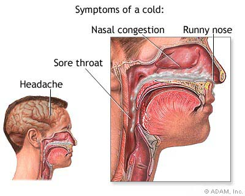
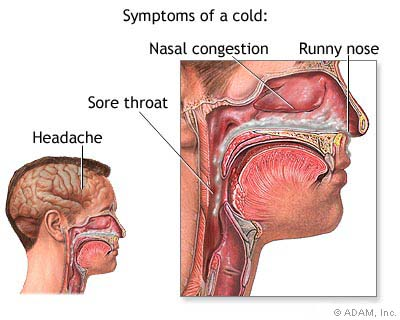
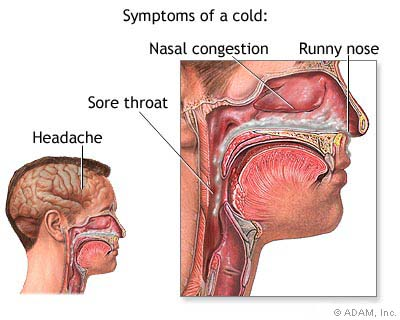

You know the drill. Your throat feels scratchy, you start sneezing and coughing, and pretty soon you're in the grip of a nasty cold. To add insult to injury, all that big-time misery is from a tiny invader -- a living thing called a virus.
And it's not just one you need to dodge. There are more than 200 that can lay you low.
It's likely that someday you'll have a close encounter with one of these types:
Rhinovirus
Coronavirus
RSV and parainfluenza
There are also a lot of viruses that doctors haven't identified. About 20%-30% of colds in adults are caused by these "unknown" bugs.
Maybe you're one of the lucky few. You have to think hard to remember when you last got sick. But for the rest of us, two to four colds a year is pretty much the norm. So what gives? Your age and the company you keep are a big part of your risk. But whether you're young or old, there are simple things you can do to get the upper hand against germs.
If you're sick of being sick with a cold, then it's time to learn some cold prevention techniques. It's not hard to prevent a cold. You just need to learn and use some new behaviors and lifestyle habits, every day. Here is how you can stay well.
Your best protection from the common cold and flu is frequent hand washing. Amazingly, about 80% of contagious diseases are transmitted by touch. The simple friction that occurs when you rub skin against skin while using warm water and soap followed by thorough rinsing and drying can get rid of most potentially harmful germs.
While germs are often transferred to others through household objects -- telephones, doorknobs, toothbrushes, and faucet handles -- the biggest transportation center for germs is your hands. That's why frequent hand washing gets rid of the illness-causing germs and helps to prevent the spread of some diseases -- especially if a family member, friend, or classmate has a cold or flu virus.
The CDC estimates that as many as 49,000 people die from the flu or flu-like illness each year. The CDC also says the simple act of hand washing is the single most important means of preventing the spread of viral and bacterial infections. Yet some studies reveal that many Americans using public restrooms don't wash their hands before leaving. People also forget to wash their hands before preparing meals, and they grab snacks without thinking of washing their hands beforehand. If you want to help prevent colds, just stop -- and wash your hands.
You usually don't get a fever with a cold. If you do, it may be a sign you've got the flu or an infection with a bacteria. For the first few days that you're sick, your runny nose will be watery, but it turns thicker and darker after that. You may also get a mild cough that can last into the second week of your cold. Since a cold can make your asthma worse, check with your doctor to see if you need to change your regular treatment plan. If you cough up thick or dark mucus or you get a fever, you may have an infection with a bacteria. See your doctor to find out how to treat it. Also see him if your cough doesn't get better after a few weeks. Your symptoms usually start between 1 and 3 days after you get infected with a cold virus. They typically last for about 3 to 7 days. By then the worst is over, but you may feel stuffed up for a week or more. You're most contagious during the first 3 days that you're sick, but it's still possible to spread it during the first week.
You have trouble breathing or chest pain .
Your fever doesn't get better.
You can't keep anything down.
It hurts to swallow
You can't get rid of your cough .
Your congestion and headache won't go away.
